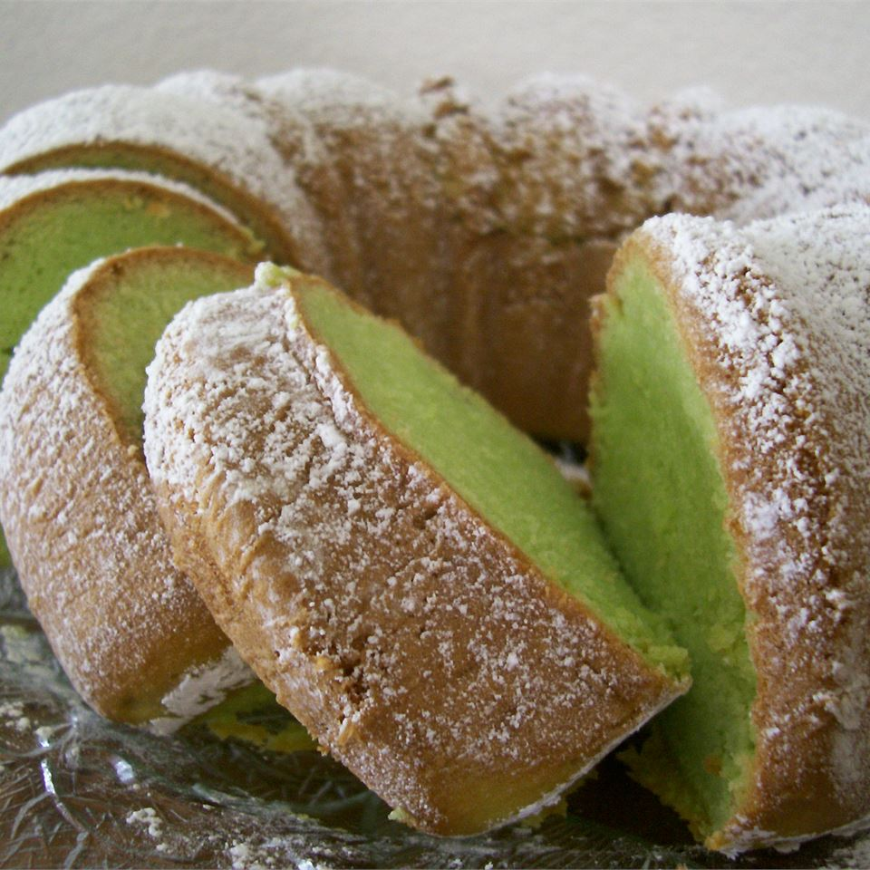

Pistachio Cake

Description
Scrumptious green tube cake made by enhancing a boxed cake mix with
pistachio pudding and green food coloring
Ingredients
- 1 (15.25 ounce) package yellow cake mix
- 1 (3.4 ounce) package instant pistachio pudding mix
- 4 large eggs
- 1 1/2 cups water
- 1/4 cup vegetable oil
- 1/2 teaspoon almond extract
- 7 drops green food coloring
Steps
- Preheat the oven to 350 degrees F (175 degrees C). Grease
and flour a 10-inch tube pan.
- Mix together cake mix and pudding mix in a large bowl.
Make a well in the center and pour in eggs, water, oil,
almond extract, and green food coloring. Blend ingredients,
then beat for 2 minutes at medium speed. Pour batter into
the prepared pan.
- Bake in the preheated oven until cake springs back when
lightly pressed, 50 to 55 minutes. Cool in the pan for 15
minutes. Turn out onto a wire rack and cool completely.
Go back